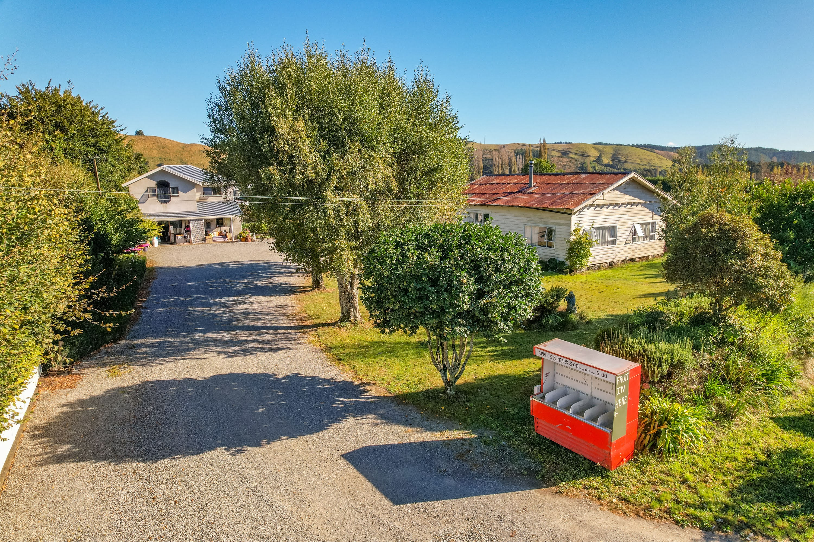

The people behind Fairfield
Meet Patrick & Elise.
A local family business growing seasonal fruit and welcoming visitors to the farm.
Final business story and portrait to be confirmed.


Seasonal berries, pick-your-own, real fruit ice cream and a shop full of local finds.
Explore the farm ↗
Come for the berries. Explore the rows, enjoy a real fruit ice cream and browse what’s in the shop.


Berry varieties and picking availability change through the season.
Plan your visit ↗A local family business growing seasonal fruit and welcoming visitors to the farm.
Final business story and portrait to be confirmed.

See what berry picking looks like at Fairfield. Availability varies by season.


Swipe or use the arrows to see more →
From berries and real fruit ice cream to jams, fruit drinks and more.


Swipe or use the arrows to see more →
Opening hours, farm address and current pick-your-own availability will be added when confirmed with Fairfield Berries.
Explore what's here ↑